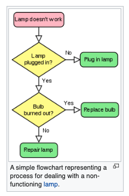
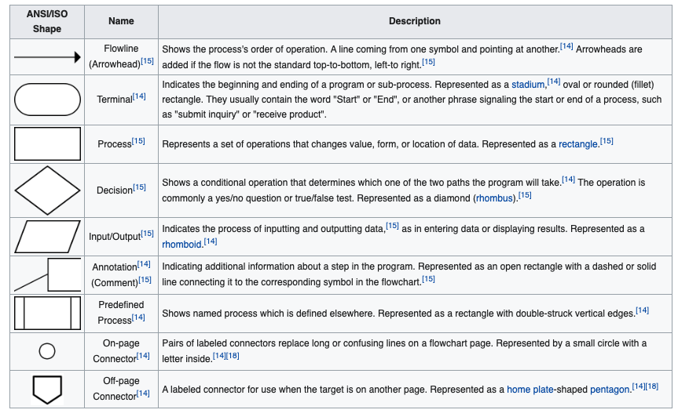

<!DOCTYPE html>
<html lang="en">
    <head>
        <meta charset="utf-8">
        <meta http-equiv="X-UA-Compatible" content="IE=edge">
        <meta name="viewport" content="width=device-width, initial-scale=1.0">
        
        
        
        <link rel="shortcut icon" href="../../../img/favicon.ico">
        <title>Program Control Structures - Engr 1330 - Web Book</title>
        <link href="../../../css/bootstrap-custom.min.css" rel="stylesheet">
        <link href="../../../css/font-awesome.min.css" rel="stylesheet">
        <link href="../../../css/base.css" rel="stylesheet">
        <link rel="stylesheet" href="https://cdnjs.cloudflare.com/ajax/libs/highlight.js/9.12.0/styles/github.min.css">

        <script src="../../../js/jquery-1.10.2.min.js" defer></script>
        <script src="../../../js/bootstrap-3.0.3.min.js" defer></script>
        <script src="https://cdnjs.cloudflare.com/ajax/libs/highlight.js/9.12.0/highlight.min.js"></script>
        <script src="https://cdnjs.cloudflare.com/ajax/libs/highlight.js/9.12.0/languages/python.min.js"></script>
        <script>hljs.initHighlightingOnLoad();</script> 
    </head>

    <body>

        <div class="navbar navbar-default navbar-fixed-top" role="navigation">
            <div class="container">

                <!-- Collapsed navigation -->
                <div class="navbar-header">
                    <!-- Expander button -->
                    <button type="button" class="navbar-toggle" data-toggle="collapse" data-target=".navbar-collapse">
                        <span class="sr-only">Toggle navigation</span>
                        <span class="icon-bar"></span>
                        <span class="icon-bar"></span>
                        <span class="icon-bar"></span>
                    </button>
                    <a class="navbar-brand" href="../../..">Engr 1330 - Web Book</a>
                </div>

                <!-- Expanded navigation -->
                <div class="navbar-collapse collapse">
                        <!-- Main navigation -->
                        <ul class="nav navbar-nav">
                            <li >
                                <a href="../../..">Home</a>
                            </li>
                            <li class="dropdown">
                                <a href="#" class="dropdown-toggle" data-toggle="dropdown">Introduction <b class="caret"></b></a>
                                <ul class="dropdown-menu">
                                    
<li >
    <a href="../../Lesson00/lesson0/">Computational Thinking and Data Science</a>
</li>
                                    
<li >
    <a href="../../Lesson01/lesson1/">Problem Solving with Computational Thinking</a>
</li>
                                </ul>
                            </li>
                            <li class="dropdown active">
                                <a href="#" class="dropdown-toggle" data-toggle="dropdown">Scripting Fundamentals <b class="caret"></b></a>
                                <ul class="dropdown-menu">
                                    
<li >
    <a href="../../Lesson02/lesson2/">Simple Computation</a>
</li>
                                    
<li >
    <a href="../../Lesson03/lesson3/">Data Structures and the MATH package</a>
</li>
                                    
<li class="active">
    <a href="./">Program Control Structures</a>
</li>
                                    
<li >
    <a href="../../../lesson0/lesson0/">External Functions and Modules</a>
</li>
                                    
<li >
    <a href="../../../lesson0/lesson0/">Engineering and Scientific Data Files</a>
</li>
                                    
<li >
    <a href="../../Lesson07/lesson6/">Computational Linear Algebra using NUMPY</a>
</li>
                                    
<li >
    <a href="../../Lesson08/lesson7/">Database Query and Manipulation using PANDAS</a>
</li>
                                    
<li >
    <a href="../../Lesson09/lesson8/">Visual Display of Data using MATPLOTLIB</a>
</li>
                                </ul>
                            </li>
                            <li class="dropdown">
                                <a href="#" class="dropdown-toggle" data-toggle="dropdown">Engineering Computation <b class="caret"></b></a>
                                <ul class="dropdown-menu">
                                    
<li >
    <a href="../../Lesson10/lesson10/">Implicit Equations</a>
</li>
                                    
<li >
    <a href="../../Lesson11/lesson11/">Interpolation and Integration</a>
</li>
                                    
<li >
    <a href="../../Lesson12/lesson12/">Linear Equation Systems</a>
</li>
                                    
<li >
    <a href="../../Lesson13/lesson13/">Non-Linear Equation Systems</a>
</li>
                                </ul>
                            </li>
                            <li class="dropdown">
                                <a href="#" class="dropdown-toggle" data-toggle="dropdown">Models and Decisions <b class="caret"></b></a>
                                <ul class="dropdown-menu">
                                    
<li >
    <a href="../../../lesson0/lesson0/">Statistical Data Modeling</a>
</li>
                                    
<li >
    <a href="../../../lesson0/lesson0/">Randomness and Probability</a>
</li>
                                    
<li >
    <a href="../../Lesson15/lesson15/">Descriptive Statistics</a>
</li>
                                    
<li >
    <a href="../../../lesson0/lesson0/">Distribution Models</a>
</li>
                                    
<li >
    <a href="../../Lesson17/lesson17/">Probability Estimation Modeling</a>
</li>
                                    
<li >
    <a href="../../../lesson0/lesson0/">Hypothesis Testing</a>
</li>
                                    
<li >
    <a href="../../../lesson0/lesson0/">Experimental Design (A/B Testing)</a>
</li>
                                    
<li >
    <a href="../../../lesson0/lesson0/">Interval Estimates</a>
</li>
                                </ul>
                            </li>
                            <li class="dropdown">
                                <a href="#" class="dropdown-toggle" data-toggle="dropdown">Prediction <b class="caret"></b></a>
                                <ul class="dropdown-menu">
                                    
<li >
    <a href="../../../lesson0/lesson0/">Fitting Models to Observations</a>
</li>
                                    
<li >
    <a href="../../../lesson0/lesson0/">Least Squares (Regression) Model Fitting</a>
</li>
                                    
<li >
    <a href="../../../lesson0/lesson0/">Model Quality</a>
</li>
                                    
<li >
    <a href="../../../lesson0/lesson0/">Estimating Probability/Quantile Regression</a>
</li>
                                </ul>
                            </li>
                            <li class="dropdown">
                                <a href="#" class="dropdown-toggle" data-toggle="dropdown">Classification <b class="caret"></b></a>
                                <ul class="dropdown-menu">
                                    
<li >
    <a href="../../../lesson0/lesson0/">Introduction</a>
</li>
                                    
<li >
    <a href="../../../lesson0/lesson0/">Types</a>
</li>
                                    
<li >
    <a href="../../../lesson0/lesson0/">K Nearest Neighbor</a>
</li>
                                    
<li >
    <a href="../../../lesson0/lesson0/">Engine Update</a>
</li>
                                </ul>
                            </li>
                        </ul>

                    <ul class="nav navbar-nav navbar-right">
                        <li>
                            <a href="#" data-toggle="modal" data-target="#mkdocs_search_modal">
                                <i class="fa fa-search"></i> Search
                            </a>
                        </li>
                            <li >
                                <a rel="next" href="../../Lesson03/lesson3/">
                                    <i class="fa fa-arrow-left"></i> Previous
                                </a>
                            </li>
                            <li >
                                <a rel="prev" href="../../../lesson0/lesson0/">
                                    Next <i class="fa fa-arrow-right"></i>
                                </a>
                            </li>
                    </ul>
                </div>
            </div>
        </div>

        <div class="container">
                <div class="col-md-3"><div class="bs-sidebar hidden-print affix well" role="complementary">
    <ul class="nav bs-sidenav">
        <li class="main active"><a href="#engr-1330-computational-thinking-with-data-science">ENGR 1330 Computational Thinking with Data Science</a></li>
            <li><a href="#lesson-4-program-flow-control-structures-for-repetition">Lesson 4 Program Flow Control Structures for Repetition:</a></li>
            <li><a href="#objectives">Objectives</a></li>
            <li><a href="#repetition-and-loops">Repetition and Loops</a></li>
            <li><a href="#for-loop-count-controlled-repetition-structure">For Loop (Count controlled repetition structure)</a></li>
            <li><a href="#example-for-loops">Example for loops</a></li>
            <li><a href="#sentinel-controlled-repetition">Sentinel-controlled repetition.</a></li>
        <li class="main "><a href="#example-while-loops">Example while loops</a></li>
            <li><a href="#nested-repetition">Nested Repetition</a></li>
            <li><a href="#flowcharts">Flowcharts</a></li>
        <li class="main "><a href="#sorting-important-flow-control-cases">Sorting (Important Flow Control Cases)</a></li>
            <li><a href="#bubble-sort">Bubble Sort</a></li>
            <li><a href="#insertion-sort">Insertion Sort</a></li>
            <li><a href="#merge-sort">Merge Sort</a></li>
            <li><a href="#references">References</a></li>
    </ul>
</div></div>
                <div class="col-md-9" role="main">

<h1 id="engr-1330-computational-thinking-with-data-science">ENGR 1330 Computational Thinking with Data Science</h1>
<p>Last GitHub Commit Date: 31 January 2021</p>
<h2 id="lesson-4-program-flow-control-structures-for-repetition">Lesson 4 Program Flow Control Structures for Repetition:</h2>
<ul>
<li>Controlled repetition</li>
<li>Structured FOR Loop</li>
<li>Structured WHILE Loop</li>
<li>Representing computational processes with flowcharts, a graphical abstraction</li>
</ul>
<hr />
<h3 id="special-script-blocks">Special Script Blocks</h3>
<pre><code class="python">%%html
&lt;!-- Script Block to set tables to left alignment --&gt;
&lt;style&gt;
  table {margin-left: 0 !important;}
&lt;/style&gt;
</code></pre>

<!-- Script Block to set tables to left alignment -->

<style>
  table {margin-left: 0 !important;}
</style>

<hr />
<h2 id="objectives">Objectives</h2>
<p>1) Develop awareness of loops, and their utility in automation. 
- To understand loop types available in Python.
- To understand and implement loops in various examples and configurations.</p>
<p>2) Develop awareness of flowcharts as a tool for: 
- Post-development documentation
- Pre-development program design</p>
<hr />
<h2 id="repetition-and-loops">Repetition and Loops</h2>
<p><strong>Computational thinking (CT)</strong> concepts involved are:</p>
<ul>
<li><code>Decomposition</code> : Break a problem down into smaller pieces; the body of tasks in one repetition of a loop represent decomposition of the entire sets of repeated activities</li>
<li><code>Pattern Recognition</code> : Finding similarities between things; the body of tasks in one repetition of a loop is the pattern, the indices and components that change are how we leverage reuse</li>
<li><code>Abstraction</code> : Pulling out specific differences to make one solution work for multiple problems</li>
<li><code>Algorithms</code> : A list of steps that you can follow to finish a task</li>
</ul>
<p>The action of doing something over and over again (repetition) is called a loop.  Basically, Loops repeats a portion of code a finite number of times until a process is complete. Repetitive tasks are very common and essential in programming. They save time in coding, minimize coding errors, and leverage the speed of electronic computation.</p>
<h3 id="loop-analogs">Loop Analogs</h3>
<p>If you think any mass manufacturing process, we apply the same process again and again. Even for something very simple such as preparing a peanut butter sandwich:</p>
<p>Consider the <strong><em>flowchart</em></strong> in Figure 1, it represents a decomposition of sandwich assembly, but at a high level -- for instance, <code>Gather Ingredients</code> contains a lot of substeps that would need to be decomposed if fully automated assembly were to be accomplished; nevertheless lets stipulate that this flowchart will indeed construct a single sandwich.</p>
<p></p>
<table>
<thead>
<tr>
<th align="left">Figure 1</th>
<th align="left">Supervisory Flowchart Sandwich Assembly (adapted from http://www.str-tn.org/subway_restaurant_training_manual.pdf)</th>
<th align="left"></th>
</tr>
</thead>
<tbody>
<tr>
<td></td>
<td></td>
<td></td>
</tr>
</tbody>
</table>
<p>If we need to make 1000 peanut butter sandwichs we would then issue a directive to:</p>
<p>1) Implement sandwich assembly, repeat 999 times (repeat is the loop structure) (A serial structure, 1 sandwich artist, doing same job over and over again)</p>
<p><strong>OR</strong></p>
<p>2) Implement 1000 sandwich assembly threads (A parallel structure, 1000 sandwich artists doing same job once)</p>
<p>In general because we dont want to idle 999 sandwich artists, we would choose the serial structure, which frees 999 people to ask the existential question "would you like fries with that?"</p>
<p>All cynicism aside, an automated process such as a loop, is typical in computational processing. </p>
<p><strong><em>Aside</em></strong> NVIDIA CUDA, and AMD OpenGL compilers can detect the structure above, and if there are enough GPU threads available , create the 1000 sandwich artists (1000 GPU threads), and run the process in parallel -- the actual workload is unchanged in a thermodynamic sense, but the apparent time (in human terms) spent in sandwich creation is a fraction of the serial approach.  This parallelization is called unrolling the loop, and is a pretty common optimization step during compilation. This kind of programming is outside the scope of this class.</p>
<p>Main attractiveness of loops is:
- Leveraging  <code>pattern matching</code> and <code>automation</code>
- Code is more organized and shorter,because a loop is a sequence of instructions that is continually repeated until a certain condition is reached. </p>
<p>There are 2 main types loops based on the repetition control condition; <code>for</code> loops and <code>while</code>loops.</p>
<h2 id="for-loop-count-controlled-repetition-structure">For Loop (Count controlled repetition structure)</h2>
<p>Count-controlled repetition is also called definite repetition because the number of repetitions is known before the loop begins executing. 
When we do not know in advance the number of times we want to execute a statement, we cannot use count-controlled repetition. 
In such an instance, we would use sentinel-controlled repetition. </p>
<p>A count-controlled repetition will exit after running a certain number of times. 
The count is kept in a variable called an index or counter. 
When the index reaches a certain value (the loop bound) the loop will end. </p>
<p>Count-controlled repetition requires</p>
<ul>
<li>control variable (or loop counter)</li>
<li>initial value of the control variable</li>
<li>increment (or decrement) by which the control variable is modified each iteration through the loop</li>
<li>condition that tests for the final value of the control variable </li>
</ul>
<p>We can use both <code>for</code> and <code>while</code> loops, for count controlled repetition, but the <code>for</code> loop in combination with the <code>range()</code> function is more common.</p>
<h3 id="structured-for-loop">Structured <code>FOR</code> loop</h3>
<p>We have seen the for loop already, but we will formally introduce it here. The <code>for</code> loop executes a block of code repeatedly until the condition in the <code>for</code> statement is no longer true.</p>
<h3 id="looping-through-an-iterable">Looping through an iterable</h3>
<p>An iterable is anything that can be looped over - typically a list, string, or tuple. 
The syntax for looping through an iterable is illustrated by an example.</p>
<p>First a generic syntax</p>
<pre><code>for a in iterable:
print(a)
</code></pre>
<p>Notice our friends the colon <code>:</code> and the indentation.</p>
<h4 id="the-range-function-to-create-an-iterable">The <code>range()</code> function to create an iterable</h4>
<p>The <code>range(begin,end,increment)</code> function will create an iterable starting at a value of begin, in steps defined by increment (<code>begin += increment</code>), ending at <code>end</code>. </p>
<p>So a generic syntax becomes</p>
<pre><code>for a in range(begin,end,increment):
print(a)
</code></pre>
<p>The examples that follow are count-controlled repetition (increment skip if greater)</p>
<h2 id="example-for-loops">Example <code>for</code> loops</h2>
<pre><code class="python"># sum numbers from 1 to n
howmany = int(input('Enter N'))
accumulator = 0.0
for i in range(1,howmany+1,1):
    accumulator = accumulator + float(i)
print( 'Sum from 1 to ',howmany, 'is %.3f' % accumulator  )
</code></pre>

<pre><code>Enter N 33


Sum from 1 to  33 is 561.000
</code></pre>
<pre><code class="python"># sum even numbers from 1 to n
howmany = int(input('Enter N'))
accumulator = 0.0
for i in range(1,howmany+1,1):
    if i%2 == 0:
        accumulator = accumulator + float(i)
print( 'Sum of Evens from 1 to ',howmany, 'is %.3f' % accumulator  )
</code></pre>

<pre><code>Enter N 33


Sum of Evens from 1 to  33 is 272.000
</code></pre>
<pre><code class="python">howmany = int(input('Enter N'))
linetoprint=''
for i in range(1,howmany+1,1):
    linetoprint=linetoprint + '*'
    print(linetoprint)
</code></pre>

<pre><code>Enter N 33


*
**
***
****
*****
******
*******
********
*********
**********
***********
************
*************
**************
***************
****************
*****************
******************
*******************
********************
*********************
**********************
***********************
************************
*************************
**************************
***************************
****************************
*****************************
******************************
*******************************
********************************
*********************************
</code></pre>
<h2 id="sentinel-controlled-repetition">Sentinel-controlled repetition.</h2>
<p>When loop control is based on the value of what we are processing, sentinel-controlled repetition is used. 
Sentinel-controlled repetition is also called indefinite repetition because it is not known in advance how many times the loop will be executed. 
It is a repetition procedure for solving a problem by using a sentinel value (also called a signal value, a dummy value or a flag value) to indicate "end of process". 
The sentinel value itself need not be a part of the processed data.</p>
<p>One common example of using sentinel-controlled repetition is when we are processing data from a file and we do not know in advance when we would reach the end of the file. </p>
<p>We can use both <code>for</code> and <code>while</code> loops, for <strong>Sentinel</strong> controlled repetition, but the <code>while</code> loop is more common.</p>
<h3 id="structured-while-loop">Structured <code>WHILE</code> loop</h3>
<p>The <code>while</code> loop repeats a block of instructions inside the loop while a condition remainsvtrue.</p>
<p>First a generic syntax</p>
<pre><code>while condition is true:
    execute a
    execute b
....
</code></pre>
<p>Notice our friends the colon <code>:</code> and the indentation again.</p>
<h1 id="example-while-loops">Example <code>while</code> loops</h1>
<pre><code class="python"># sum numbers from 1 to n
howmany = int(input('Enter N'))
accumulator = 0.0
counter = 1
while counter &lt;= howmany:
    accumulator = accumulator + float(counter)
    counter += 1
print( 'Sum from 1 to ',howmany, 'is %.3f' % accumulator  )
</code></pre>

<pre><code>Enter N 33


Sum from 1 to  33 is 561.000
</code></pre>
<pre><code class="python"># sum even numbers from 1 to n
howmany = int(input('Enter N'))
accumulator = 0.0
counter = 1
while counter &lt;= howmany:
    if counter%2 == 0:
        accumulator = accumulator + float(counter)
    counter += 1
print( 'Sum of Evens 1 to ',howmany, 'is %.3f' % accumulator  )
</code></pre>

<pre><code>Enter N 33


Sum of Evens 1 to  33 is 272.000
</code></pre>
<pre><code class="python">howmany = int(input('Enter N'))
linetoprint=''
counter = 1
while counter &lt;= howmany:
    linetoprint=linetoprint + '*'
    counter += 1
    print(linetoprint)
</code></pre>

<pre><code>Enter N 33


*
**
***
****
*****
******
*******
********
*********
**********
***********
************
*************
**************
***************
****************
*****************
******************
*******************
********************
*********************
**********************
***********************
************************
*************************
**************************
***************************
****************************
*****************************
******************************
*******************************
********************************
*********************************
</code></pre>
<h2 id="nested-repetition">Nested Repetition</h2>
<p>Nested repetition is when a control structure is placed inside of the body or main part of another control structure.</p>
<h4 id="break-to-exit-out-of-a-loop"><code>break</code> to exit out of a loop</h4>
<p>Sometimes you may want to exit the loop when a certain condition different from the counting
condition is met. Perhaps you are looping through a list and want to exit when you find the
first element in the list that matches some criterion. The break keyword is useful for such
an operation.</p>
<p>For example run the following program:</p>
<pre><code class="python">#
j = 0
for i in range(0,9,1):
    j += 2
    print (&quot;i = &quot;,i,&quot;j = &quot;,j)
    if j == 6:
        break   
</code></pre>

<pre><code>i =  0 j =  2
i =  1 j =  4
i =  2 j =  6
</code></pre>
<pre><code class="python">j = 0
for i in range(0,5,1):
    j += 2
    print( &quot;i = &quot;,i,&quot;j = &quot;,j)
    if j == 7:
        break
</code></pre>

<pre><code>i =  0 j =  2
i =  1 j =  4
i =  2 j =  6
i =  3 j =  8
i =  4 j =  10
</code></pre>
<p>In the first case, the for loop only executes 3 times before the condition j == 6 is TRUE and the loop is exited. 
In the second case, j == 7 never happens so the loop completes all its anticipated traverses.</p>
<p>In both cases an <code>if</code> statement was used within a for loop. Such "mixed" control structures
are quite common (and pretty necessary). 
A <code>while</code> loop contained within a <code>for</code> loop, with several <code>if</code> statements would be very common and such a structure is called <strong>nested control.</strong>
There is typically an upper limit to nesting but the limit is pretty large - easily in the
hundreds. It depends on the language and the system architecture ; suffice to say it is not
a practical limit except possibly for general-domain AI applications.
<hr></p>
<p>We can also do mundane activities and leverage loops, arithmetic, and format codes to make useful tables like</p>
<pre><code class="python">import math # package that contains cosine
print(&quot;     Cosines     &quot;)
print(&quot;   x   &quot;,&quot;|&quot;,&quot; cos(x) &quot;)
print(&quot;--------|--------&quot;)
for i in range(0,157,1):
    x = float(i)*0.1
    print(&quot;%.3f&quot; % x, &quot;  |&quot;, &quot; %.4f &quot;  % math.cos(x)) # note the format code and the placeholder % and syntax 
</code></pre>

<pre><code>     Cosines     
   x    |  cos(x) 
--------|--------
0.000   |  1.0000 
0.100   |  0.9950 
0.200   |  0.9801 
0.300   |  0.9553 
0.400   |  0.9211 
0.500   |  0.8776 
0.600   |  0.8253 
0.700   |  0.7648 
0.800   |  0.6967 
0.900   |  0.6216 
1.000   |  0.5403 
1.100   |  0.4536 
1.200   |  0.3624 
1.300   |  0.2675 
1.400   |  0.1700 
1.500   |  0.0707 
1.600   |  -0.0292 
1.700   |  -0.1288 
1.800   |  -0.2272 
1.900   |  -0.3233 
2.000   |  -0.4161 
2.100   |  -0.5048 
2.200   |  -0.5885 
2.300   |  -0.6663 
2.400   |  -0.7374 
2.500   |  -0.8011 
2.600   |  -0.8569 
2.700   |  -0.9041 
2.800   |  -0.9422 
2.900   |  -0.9710 
3.000   |  -0.9900 
3.100   |  -0.9991 
3.200   |  -0.9983 
3.300   |  -0.9875 
3.400   |  -0.9668 
3.500   |  -0.9365 
3.600   |  -0.8968 
3.700   |  -0.8481 
3.800   |  -0.7910 
3.900   |  -0.7259 
4.000   |  -0.6536 
4.100   |  -0.5748 
4.200   |  -0.4903 
4.300   |  -0.4008 
4.400   |  -0.3073 
4.500   |  -0.2108 
4.600   |  -0.1122 
4.700   |  -0.0124 
4.800   |  0.0875 
4.900   |  0.1865 
5.000   |  0.2837 
5.100   |  0.3780 
5.200   |  0.4685 
5.300   |  0.5544 
5.400   |  0.6347 
5.500   |  0.7087 
5.600   |  0.7756 
5.700   |  0.8347 
5.800   |  0.8855 
5.900   |  0.9275 
6.000   |  0.9602 
6.100   |  0.9833 
6.200   |  0.9965 
6.300   |  0.9999 
6.400   |  0.9932 
6.500   |  0.9766 
6.600   |  0.9502 
6.700   |  0.9144 
6.800   |  0.8694 
6.900   |  0.8157 
7.000   |  0.7539 
7.100   |  0.6845 
7.200   |  0.6084 
7.300   |  0.5261 
7.400   |  0.4385 
7.500   |  0.3466 
7.600   |  0.2513 
7.700   |  0.1534 
7.800   |  0.0540 
7.900   |  -0.0460 
8.000   |  -0.1455 
8.100   |  -0.2435 
8.200   |  -0.3392 
8.300   |  -0.4314 
8.400   |  -0.5193 
8.500   |  -0.6020 
8.600   |  -0.6787 
8.700   |  -0.7486 
8.800   |  -0.8111 
8.900   |  -0.8654 
9.000   |  -0.9111 
9.100   |  -0.9477 
9.200   |  -0.9748 
9.300   |  -0.9922 
9.400   |  -0.9997 
9.500   |  -0.9972 
9.600   |  -0.9847 
9.700   |  -0.9624 
9.800   |  -0.9304 
9.900   |  -0.8892 
10.000   |  -0.8391 
10.100   |  -0.7806 
10.200   |  -0.7143 
10.300   |  -0.6408 
10.400   |  -0.5610 
10.500   |  -0.4755 
10.600   |  -0.3853 
10.700   |  -0.2913 
10.800   |  -0.1943 
10.900   |  -0.0954 
11.000   |  0.0044 
11.100   |  0.1042 
11.200   |  0.2030 
11.300   |  0.2997 
11.400   |  0.3935 
11.500   |  0.4833 
11.600   |  0.5683 
11.700   |  0.6476 
11.800   |  0.7204 
11.900   |  0.7861 
12.000   |  0.8439 
12.100   |  0.8932 
12.200   |  0.9336 
12.300   |  0.9647 
12.400   |  0.9862 
12.500   |  0.9978 
12.600   |  0.9994 
12.700   |  0.9911 
12.800   |  0.9728 
12.900   |  0.9449 
13.000   |  0.9074 
13.100   |  0.8610 
13.200   |  0.8059 
13.300   |  0.7427 
13.400   |  0.6722 
13.500   |  0.5949 
13.600   |  0.5117 
13.700   |  0.4234 
13.800   |  0.3308 
13.900   |  0.2349 
14.000   |  0.1367 
14.100   |  0.0372 
14.200   |  -0.0628 
14.300   |  -0.1621 
14.400   |  -0.2598 
14.500   |  -0.3549 
14.600   |  -0.4465 
14.700   |  -0.5336 
14.800   |  -0.6154 
14.900   |  -0.6910 
15.000   |  -0.7597 
15.100   |  -0.8208 
15.200   |  -0.8737 
15.300   |  -0.9179 
15.400   |  -0.9530 
15.500   |  -0.9785 
15.600   |  -0.9942
</code></pre>
<h4 id="the-continue-statement">The <code>continue</code> statement</h4>
<p>The continue instruction skips the block of code after it is executed for that iteration. 
It is
best illustrated by an example.</p>
<pre><code class="python">j = 0
for i in range(0,5,1):
    j += 2
    print (&quot;\n i = &quot;, i , &quot;, j = &quot;, j) #here the \n is a newline command
    if j == 6:
        continue
    print(&quot; this message will be skipped over if j = 6 &quot;) # still within the loop, so the skip is implemented
</code></pre>

<pre><code> i =  0 , j =  2
 this message will be skipped over if j = 6

 i =  1 , j =  4
 this message will be skipped over if j = 6

 i =  2 , j =  6

 i =  3 , j =  8
 this message will be skipped over if j = 6

 i =  4 , j =  10
 this message will be skipped over if j = 6
</code></pre>
<h4 id="the-try-except-structure">The <code>try</code>, <code>except</code> structure</h4>
<p>An important control structure (and a pretty cool one for error trapping) is the <code>try</code>, <code>except</code>
statement.</p>
<p>The statement controls how the program proceeds when an error occurs in an instruction.
The structure is really useful to trap likely errors (divide by zero, wrong kind of input) 
yet let the program keep running or at least issue a meaningful message to the user.</p>
<p>The syntax is:</p>
<pre><code>try:
do something
except:
do something else if ``do something'' returns an error
</code></pre>
<p>Here is a really simple, but hugely important example:</p>
<pre><code class="python">#MyErrorTrap.py
x = 12.
y = 12.
while y &gt;= -120.: # sentinel controlled repetition
    try:         
        print (&quot;x = &quot;, x, &quot;y = &quot;, y, &quot;x/y = &quot;, x/y)
    except:
        print (&quot;error divide by zero&quot;)
    y -= 1
</code></pre>

<pre><code>x =  12.0 y =  12.0 x/y =  1.0
x =  12.0 y =  11.0 x/y =  1.0909090909090908
x =  12.0 y =  10.0 x/y =  1.2
x =  12.0 y =  9.0 x/y =  1.3333333333333333
x =  12.0 y =  8.0 x/y =  1.5
x =  12.0 y =  7.0 x/y =  1.7142857142857142
x =  12.0 y =  6.0 x/y =  2.0
x =  12.0 y =  5.0 x/y =  2.4
x =  12.0 y =  4.0 x/y =  3.0
x =  12.0 y =  3.0 x/y =  4.0
x =  12.0 y =  2.0 x/y =  6.0
x =  12.0 y =  1.0 x/y =  12.0
error divide by zero
x =  12.0 y =  -1.0 x/y =  -12.0
x =  12.0 y =  -2.0 x/y =  -6.0
x =  12.0 y =  -3.0 x/y =  -4.0
x =  12.0 y =  -4.0 x/y =  -3.0
x =  12.0 y =  -5.0 x/y =  -2.4
x =  12.0 y =  -6.0 x/y =  -2.0
x =  12.0 y =  -7.0 x/y =  -1.7142857142857142
x =  12.0 y =  -8.0 x/y =  -1.5
x =  12.0 y =  -9.0 x/y =  -1.3333333333333333
x =  12.0 y =  -10.0 x/y =  -1.2
x =  12.0 y =  -11.0 x/y =  -1.0909090909090908
x =  12.0 y =  -12.0 x/y =  -1.0
x =  12.0 y =  -13.0 x/y =  -0.9230769230769231
x =  12.0 y =  -14.0 x/y =  -0.8571428571428571
x =  12.0 y =  -15.0 x/y =  -0.8
x =  12.0 y =  -16.0 x/y =  -0.75
x =  12.0 y =  -17.0 x/y =  -0.7058823529411765
x =  12.0 y =  -18.0 x/y =  -0.6666666666666666
x =  12.0 y =  -19.0 x/y =  -0.631578947368421
x =  12.0 y =  -20.0 x/y =  -0.6
x =  12.0 y =  -21.0 x/y =  -0.5714285714285714
x =  12.0 y =  -22.0 x/y =  -0.5454545454545454
x =  12.0 y =  -23.0 x/y =  -0.5217391304347826
x =  12.0 y =  -24.0 x/y =  -0.5
x =  12.0 y =  -25.0 x/y =  -0.48
x =  12.0 y =  -26.0 x/y =  -0.46153846153846156
x =  12.0 y =  -27.0 x/y =  -0.4444444444444444
x =  12.0 y =  -28.0 x/y =  -0.42857142857142855
x =  12.0 y =  -29.0 x/y =  -0.41379310344827586
x =  12.0 y =  -30.0 x/y =  -0.4
x =  12.0 y =  -31.0 x/y =  -0.3870967741935484
x =  12.0 y =  -32.0 x/y =  -0.375
x =  12.0 y =  -33.0 x/y =  -0.36363636363636365
x =  12.0 y =  -34.0 x/y =  -0.35294117647058826
x =  12.0 y =  -35.0 x/y =  -0.34285714285714286
x =  12.0 y =  -36.0 x/y =  -0.3333333333333333
x =  12.0 y =  -37.0 x/y =  -0.32432432432432434
x =  12.0 y =  -38.0 x/y =  -0.3157894736842105
x =  12.0 y =  -39.0 x/y =  -0.3076923076923077
x =  12.0 y =  -40.0 x/y =  -0.3
x =  12.0 y =  -41.0 x/y =  -0.2926829268292683
x =  12.0 y =  -42.0 x/y =  -0.2857142857142857
x =  12.0 y =  -43.0 x/y =  -0.27906976744186046
x =  12.0 y =  -44.0 x/y =  -0.2727272727272727
x =  12.0 y =  -45.0 x/y =  -0.26666666666666666
x =  12.0 y =  -46.0 x/y =  -0.2608695652173913
x =  12.0 y =  -47.0 x/y =  -0.2553191489361702
x =  12.0 y =  -48.0 x/y =  -0.25
x =  12.0 y =  -49.0 x/y =  -0.24489795918367346
x =  12.0 y =  -50.0 x/y =  -0.24
x =  12.0 y =  -51.0 x/y =  -0.23529411764705882
x =  12.0 y =  -52.0 x/y =  -0.23076923076923078
x =  12.0 y =  -53.0 x/y =  -0.22641509433962265
x =  12.0 y =  -54.0 x/y =  -0.2222222222222222
x =  12.0 y =  -55.0 x/y =  -0.21818181818181817
x =  12.0 y =  -56.0 x/y =  -0.21428571428571427
x =  12.0 y =  -57.0 x/y =  -0.21052631578947367
x =  12.0 y =  -58.0 x/y =  -0.20689655172413793
x =  12.0 y =  -59.0 x/y =  -0.2033898305084746
x =  12.0 y =  -60.0 x/y =  -0.2
x =  12.0 y =  -61.0 x/y =  -0.19672131147540983
x =  12.0 y =  -62.0 x/y =  -0.1935483870967742
x =  12.0 y =  -63.0 x/y =  -0.19047619047619047
x =  12.0 y =  -64.0 x/y =  -0.1875
x =  12.0 y =  -65.0 x/y =  -0.18461538461538463
x =  12.0 y =  -66.0 x/y =  -0.18181818181818182
x =  12.0 y =  -67.0 x/y =  -0.1791044776119403
x =  12.0 y =  -68.0 x/y =  -0.17647058823529413
x =  12.0 y =  -69.0 x/y =  -0.17391304347826086
x =  12.0 y =  -70.0 x/y =  -0.17142857142857143
x =  12.0 y =  -71.0 x/y =  -0.16901408450704225
x =  12.0 y =  -72.0 x/y =  -0.16666666666666666
x =  12.0 y =  -73.0 x/y =  -0.1643835616438356
x =  12.0 y =  -74.0 x/y =  -0.16216216216216217
x =  12.0 y =  -75.0 x/y =  -0.16
x =  12.0 y =  -76.0 x/y =  -0.15789473684210525
x =  12.0 y =  -77.0 x/y =  -0.15584415584415584
x =  12.0 y =  -78.0 x/y =  -0.15384615384615385
x =  12.0 y =  -79.0 x/y =  -0.1518987341772152
x =  12.0 y =  -80.0 x/y =  -0.15
x =  12.0 y =  -81.0 x/y =  -0.14814814814814814
x =  12.0 y =  -82.0 x/y =  -0.14634146341463414
x =  12.0 y =  -83.0 x/y =  -0.14457831325301204
x =  12.0 y =  -84.0 x/y =  -0.14285714285714285
x =  12.0 y =  -85.0 x/y =  -0.1411764705882353
x =  12.0 y =  -86.0 x/y =  -0.13953488372093023
x =  12.0 y =  -87.0 x/y =  -0.13793103448275862
x =  12.0 y =  -88.0 x/y =  -0.13636363636363635
x =  12.0 y =  -89.0 x/y =  -0.1348314606741573
x =  12.0 y =  -90.0 x/y =  -0.13333333333333333
x =  12.0 y =  -91.0 x/y =  -0.13186813186813187
x =  12.0 y =  -92.0 x/y =  -0.13043478260869565
x =  12.0 y =  -93.0 x/y =  -0.12903225806451613
x =  12.0 y =  -94.0 x/y =  -0.1276595744680851
x =  12.0 y =  -95.0 x/y =  -0.12631578947368421
x =  12.0 y =  -96.0 x/y =  -0.125
x =  12.0 y =  -97.0 x/y =  -0.12371134020618557
x =  12.0 y =  -98.0 x/y =  -0.12244897959183673
x =  12.0 y =  -99.0 x/y =  -0.12121212121212122
x =  12.0 y =  -100.0 x/y =  -0.12
x =  12.0 y =  -101.0 x/y =  -0.1188118811881188
x =  12.0 y =  -102.0 x/y =  -0.11764705882352941
x =  12.0 y =  -103.0 x/y =  -0.11650485436893204
x =  12.0 y =  -104.0 x/y =  -0.11538461538461539
x =  12.0 y =  -105.0 x/y =  -0.11428571428571428
x =  12.0 y =  -106.0 x/y =  -0.11320754716981132
x =  12.0 y =  -107.0 x/y =  -0.11214953271028037
x =  12.0 y =  -108.0 x/y =  -0.1111111111111111
x =  12.0 y =  -109.0 x/y =  -0.11009174311926606
x =  12.0 y =  -110.0 x/y =  -0.10909090909090909
x =  12.0 y =  -111.0 x/y =  -0.10810810810810811
x =  12.0 y =  -112.0 x/y =  -0.10714285714285714
x =  12.0 y =  -113.0 x/y =  -0.10619469026548672
x =  12.0 y =  -114.0 x/y =  -0.10526315789473684
x =  12.0 y =  -115.0 x/y =  -0.10434782608695652
x =  12.0 y =  -116.0 x/y =  -0.10344827586206896
x =  12.0 y =  -117.0 x/y =  -0.10256410256410256
x =  12.0 y =  -118.0 x/y =  -0.1016949152542373
x =  12.0 y =  -119.0 x/y =  -0.10084033613445378
x =  12.0 y =  -120.0 x/y =  -0.1
</code></pre>
<p>So this silly code starts with x fixed at a value of 12, and y starting at 12 and decreasing by
1 until y equals -1. The code returns the ratio of x to y and at one point y is equal to zero
and the division would be undefined. By trapping the error the code can issue us a measure
and keep running.</p>
<p>Modify the script as shown below,Run, and see what happens</p>
<pre><code class="python">#NoErrorTrap.py
x = 12.
y = 12.
while y &gt;= -12.: # sentinel controlled repetition
    print (&quot;x = &quot;, x, &quot;y = &quot;, y, &quot;x/y = &quot;, x/y)
    y -= 1
</code></pre>

<pre><code>x =  12.0 y =  12.0 x/y =  1.0
x =  12.0 y =  11.0 x/y =  1.0909090909090908
x =  12.0 y =  10.0 x/y =  1.2
x =  12.0 y =  9.0 x/y =  1.3333333333333333
x =  12.0 y =  8.0 x/y =  1.5
x =  12.0 y =  7.0 x/y =  1.7142857142857142
x =  12.0 y =  6.0 x/y =  2.0
x =  12.0 y =  5.0 x/y =  2.4
x =  12.0 y =  4.0 x/y =  3.0
x =  12.0 y =  3.0 x/y =  4.0
x =  12.0 y =  2.0 x/y =  6.0
x =  12.0 y =  1.0 x/y =  12.0


---------------------------------------------------------------------------

ZeroDivisionError                         Traceback (most recent call last)

&lt;ipython-input-23-82eeaceb9a12&gt; in &lt;module&gt;
      3 y = 12.
      4 while y &gt;= -12.: # sentinel controlled repetition
----&gt; 5     print ("x = ", x, "y = ", y, "x/y = ", x/y)
      6     y -= 1


ZeroDivisionError: float division by zero
</code></pre>
<h2 id="flowcharts">Flowcharts</h2>
<h3 id="what-is-a-flowchart">What is a Flowchart?</h3>
<p>A flowchart is a type of diagram that represents a workflow or process. A flowchart can also be defined as a diagrammatic representation of an algorithm, a step-by-step approach to solving a task.</p>
<p></p>
<table>
<thead>
<tr>
<th align="left">Figure 2</th>
<th align="left">Repair Flowchart for a Lamp</th>
<th align="left">https://en.wikipedia.org/wiki/Flowchart</th>
</tr>
</thead>
<tbody>
<tr>
<td></td>
<td></td>
<td></td>
</tr>
</tbody>
</table>
<p>The flowchart shows the steps as boxes of various kinds, and their order by connecting the boxes with arrows. This diagrammatic representation illustrates a solution model to a given problem. Flowcharts are used in analyzing, designing, documenting or managing a process or program in various fields.</p>
<p>There is a symbol convention (a language) as depicted in Figure 2 below (from: https://en.wikipedia.org/wiki/Flowchart)</p>
<p></p>
<table>
<thead>
<tr>
<th align="left">Figure 1</th>
<th align="left">Flowchart Symbols</th>
<th align="left">https://en.wikipedia.org/wiki/Flowchart</th>
</tr>
</thead>
<tbody>
<tr>
<td></td>
<td></td>
<td></td>
</tr>
</tbody>
</table>
<p>IBM engineers implemented programming flowcharts based upon Goldstine and von Neumann's unpublished report, "Planning and coding of problems for an electronic computing instrument, Part II, Volume 1" (1947), which is reproduced in von Neumann's collected works.</p>
<p>The flowchart became a popular tool for describing computer algorithms, but its popularity decreased in the 1970s, when interactive computer terminals and third-generation programming languages became common tools for computer programming, since algorithms can be expressed more concisely as source code in such languages. Often pseudo-code is used, which uses the common idioms of such languages without strictly adhering to the details of a particular one.</p>
<p>Nowadays flowcharts are still used for describing computer algorithms.[9] Modern techniques such as UML activity diagrams and Drakon-charts can be considered to be extensions of the flowchart.</p>
<p>Nearly all flowcharts focus on on some kind of control, rather than on the particular flow itself!  While quaint today, they are an effective way to document processes in a program and visualize structures.  We recomend you get in the habit of making rudimentary flowcharts, at least at the supervisory level (the sandwich chart above)</p>
<h3 id="how-are-they-useful">How are they useful?</h3>
<p>(paraphrased from https://www.breezetree.com/articles/top-reasons-to-flowchart)</p>
<p>Sometimes it's more effective to visualize something graphically that it is to describe it with words. That is the essence of what flowcharts do for you. Flowcharts explain a process clearly through symbols and text. Moreover, flowcharts give you the gist of the process flow in a single glance. The following are some of the more salient reasons to use flowcharts.</p>
<p><strong>Process Documentation / Training Materials</strong>
Another common use for flowcharts is to create process documentation. Although this reason overlaps with regulatory and quality management requirements (below), many non-regulated businesses use flowcharts for their documentation as well. These can range in form from high-level procedures to low-level, detailed work instructions.</p>
<p>You may think that this applies mainly to large organizations, but small companies can greatly benefit from flowcharting their processes as well. Small enterprises need to be nimble and organized. Standardizing their processes is a great way to achieve this. In fact, the popular entrepreneurial book The E-Myth Revisited: Why Most Small Businesses Don't Work and What to Do About It by Michael Gerber is based on the fact that small businesses are more likely to succeed if they treat their operations like a franchise. in a nutshell, this means standardizing and documenting their business processes. There's no better way to do that than with flowcharts, right?</p>
<p>Training materials are often created using flowcharts because they're visually stimulating and easy to understand. A nicely laid out flowchart will gain and hold the reader's attention when a block of text will often fail.</p>
<p><strong>Workflow Management and Continuous Improvement</strong>
Workflows don't manage themselves. To ensure that you are meeting your customers' needs, you need to take control of your business processes. The first step to workflow management is to define the current state of your processes by creating an "As-Is Flowchart". That allows you to analyze your processes for waste and inefficiency. After you have identified areas for process improvement, you can then craft new flowcharts to document the leaner processes.</p>
<p><strong>Programming</strong>
Information technology played a big influence on the use and spread of flowcharts in the 20th century. While Dr. W. Edwards Deming was advocating their use in quality management, professionals in the data processing world were using them to flesh out their programming logic. Flowcharts were a mainstay of procedural programming, however, and with the advent of object oriented programming and various modeling tools, the use of flowcharts for programming is no longer as commonplace as it once was.</p>
<p>That said, even with in the scope of object oriented programming, complex program logic can be modeled effectively using a flowchart. Moreover, diagramming the user's experience as they navigate through a program is a valuable prerequisite prior to designing the user interface. So flowcharts still have their place in the world of programming.</p>
<p><strong>Troubleshooting Guides</strong>
Most of us have come across a troubleshooting flowchart at one time or another. These are usually in the form of Decision Trees that progressively narrow the range of possible solutions based on a series of criteria. The effectiveness of these types of flowcharts depends on how neatly the range of problems and solutions can fit into a simple True/False diagnosis model. A well done troubleshooting flowcharts can cut the problem solving time greatly.</p>
<p><strong>Regulatory and Quality Management Requirements</strong>
Your business processes may be subject to regulatory requirements such as Sarbanes-Oxley (SOX), which requires that your accounting procedures be clearly defined and documented. An easy way to do this is to create accounting flowcharts for all your accounting processes.</p>
<p>Similarly, many organizations fall under certification requirements for quality management systems - such as ISO 9000, TS 16949, or one of the many others. In such environments, flowcharts are not only useful but in certain clauses they are actually mandated.</p>
<h1 id="sorting-important-flow-control-cases">Sorting (Important Flow Control Cases)</h1>
<p><strong>Advanced/Optional Topic</strong></p>
<p>A frequent task in data science, engineering, etc. is the seemingly mundane task of
sorting or ordering things. Here we explore a couple of simple sorting algorithms,
just to show some of the thoughts that go into such a task, then will ultimately resort
to the internal sorting routines built into Python.</p>
<p>Sorting is frequently necessary when data are being handled; for example in integration
and differentiation the data are usually presented to the various algorithms in ascending or
descending order (at least on the x-axis).
One may have tables of numbers, representing one or more explanatory variables, and one or
more responses. At times we may need to arrange these tables in an order dictated by one
or another of these various variables. Alternatively we may want to nd the median value
or upper quartile of such a list { this task requires sorting.
When sorting, one can also carry along operations to maintain correspondence with other
lists (for lack of better name lets call this sort-and-carry).
Tasks that fall under the broad category of sorting are:
- Sort ; rearrange an array of numbers into numerical order (ascending or descending).
- Sort and carry along ; rearrange an array of numbers into numerical order while per-
forming the same rearrangement of one or more additional arrays so that the correspon-
dence between elements in all arrays is maintained (the sets of arrays are essentially
a relational database { so that each record (row) maintains the cross-record (elds;
columns) relationship).
- Index ; given an array, prepare an index table that is a table of pointers that indicates
which number array element comes rst in numerical order, which is second, and so
on.
- Rank ; given an array, prepare a rank table that tells the numerical rank of an array
element.
The task of sorting <code>N</code> elements requires on the order of <script type="math/tex">K \cdot Nlog2N</script> operations. The
algorithm inventor tries to make <script type="math/tex">K</script> as small as possible (understanding that <script type="math/tex">K = 0</script> is
practically impossible). Three useful sorting algorithms are:</p>
<pre><code>1. Straight insertion sort;
2. Heapsort sort; and
3. Quicksort sort.
</code></pre>
<p>The choice of method depends on the size of the list that needs to be sorted. If the list is
short (perhaps <script type="math/tex">N < 50</script> elements) then straight insertion is fast enough, concise, and simple
to program. For a long list (<script type="math/tex">N > 1000</script> elements) Quicksort is faster, but achieves the speed
by use of extra memory. Heapsort is also good for large lists, and is an in-place routine.</p>
<p>Python lists have a built-in <code>sort()</code> method that modifies the list in-place and a <code>sorted()</code>
built-in function that builds a new sorted list from an iterable. So when sorting needs to
be done, you should use the built-in tools. However, because it is a useful programming
construct, the three sorting algorithms are presented as Python primitive codes.</p>
<h3 id="bubble-sort">Bubble Sort</h3>
<p>The bubble sort is a place to start despite it's relative slowness. It is a pretty reviled
algorithm (read the Wikipedia entry), but it is the algorithm that a naive programmer
might cobble together in a hurry, and despite its shortcomings (it's really slow and
inefficient), it is robust.</p>
<p>Here is a description of the sorting task as described by Christian and Griffths (2016)
(pg. 65):</p>
<p>"Imagine you want to alphabetize your unsorted collection of books. A
    natural approach would be just to scan across the shelf looking for out-
    of-order pairs - Wallace followed by Pynchon, for instance - and 
    flipping them around. Put Pynchon ahead of Wallace, then continue your scan,
    looping around to the beginning of the shelf each time you reach the end.
    When you make a complete pass without finding any more out-of-order
    pairs on the entire shelf, then you know the job is done.
    This process is a Bubble Sort, and it lands us in quadratic time. There
    are n books out of order, and each scan through the shelf can move each
    one at most one position. (We spot a tiny problem, make a tiny fix.) So
    in the worst case, where the shelf is perfectly backward, at least one book
    will need to be moved n positions. Thus a maximum of n passes through
    n books, which gives us O(n2) in the worst case. For instance, it
    means that sorting five shelves of books will take not five times as long as
    sorting a single shelf, but twenty-five times as long."</p>
<p>Converting the word description into Python is fairly simple. We will have a vector of n
numbers (we use a vector because its easy to step through the different positions),
and we will scan through the vector once (and essentially find the smallest thing),
and put it into the first position. Then we scan again from the second position and
find the smallest thing remaining, and put it into the second position, and so on until
the last scan which should have the remaining largest thing. If we desire a decreasing
order, simply change the sense of the comparison.</p>
<p>The algorithm defines an array and then sorts by repeated passes through the array.
The program (outside of the sorting algorithm) is really quite simple.
* Load contents into an array to be sorted.
* Echo (print) the array (so we can verify the data are loaded as anticipated).
* Loads the sorting function (the two loops)
* Sort the array, put the results back into the array (an in-place sort).
* Report the results.</p>
<pre><code class="python">#array = [7,11,5,8,9,13,66,99,223]
#array = [7,11,5]
array=[1003 ,3.2 ,55.5 , -0.0001 , -6 ,666.6 ,102]
howMany = len(array)
print(&quot;Item Count = : &quot;,howMany)
print(&quot;Unsorted List : &quot;, array)
# insertion sort
for irow in range(0, howMany-1) : 
    for jrow in range(0,(howMany-1-irow)) :
        if array[jrow]&gt; array[jrow+1] :
            swap = array[jrow]
            array[jrow]=array[jrow+1]
            array[jrow+1]=swap
        else:
            continue
#results  
print(&quot;Sorted List : &quot;, array, end =&quot;&quot;)
</code></pre>

<p>In the script we see that the program (near the bottom of the file) assigns the values to the vector named array and
the initial order of the array is <script type="math/tex">{1003, 3.2, 55.5,-0.0001,-6, 666.6, 102}</script>. The smallest
value in the example is -6 and it appears in the 5-th position, not the 1-st as it
should.</p>
<p>The first pass through the array will move the largest value, 1003, in sequence to the
right until it occupies the last position. Repeated passes through the array move the
remaining largest values to the right until the array is ordered. One can consider the
values of the array at each scan of the array as a series of transformations (irow-th
scan) -- in practical cases we don't necessarily care about the intermediate values,
but here because the size is manageable and we are trying to get our feet wet with
algorithms, we can look at the values.
The sequence of results (transformations) after each pass through the array is shown
in the following list:
1. Initial value: [1003; 3,2; 55,5;-0,0001;-6; 666,6; 102].
2. First pass: [3,2; 55,5;-0,0001;-6; 666,6; 102; 1003].
3. Second pass: [3,2;-0,0001;-6; 55,5; 102; 666,6; 1003].
4. Third pass: [-0,0001;-6; 3,2; 55,5; 102; 666,6; 1003].
5. Fourth pass: [-6;-0,0001; 3,2; 55,5; 102; 666,6; 1003].
6. Fifth pass: [-6;-0,0001; 3,2; 55,5; 102; 666,6; 1003]. Sorted, fast scan.
7. Sixth pass: [-6;-0,0001; 3,2; 55,5; 102; 666,6; 1003]. Sorted, fast scan.
We could probably add additional code to break from the scans when we have a single
pass with no exchanges (like the last two scans) -- while meaningless in this example, for larger collections of
things, being able to break out when the sorting is complete is a nice feature.</p>
<h3 id="insertion-sort">Insertion Sort</h3>
<p>The next type of sorting would be to select one item and locate it either left or right
of an adjacent item based on its size { like sorting a deck of cards, or perhaps a better
description { again using the bookshelf analog from Christian and Griffths (2016)
(pg. 65)</p>
<p>You might take a different tack -- pulling all the books off the shelf
and putting them back in place one by one. You'd put the ffrst book in
the middle of the shelf, then take the second and compare it to the first,
inserting it either to the right or to the left. Picking up the third book,
you'd run through the books on the shelf from left to right until you found
the right spot to tuck it in. Repeating this process, gradually all of the
books would end up sorted on the shelf and you'd be done. Computer
scientists call this, appropriately enough, Insertion Sort. The good news
is that it's arguably even more intuitive than Bubble Sort and doesn't
have quite the bad reputation. The bad news is that it's not actually that
much faster. You still have to do one insertion for each book. And each
insertion still involves moving past about half the books on the shelf, on
average, to find the correct place.
Although in practice Insertion Sort does run a bit faster than Bubble Sort,
again we land squarely, if you will, in quadratic time. Sorting anything
more than a single bookshelf is still an unwieldy prospect."
Listing 8 is an R implementation of a straight insertion sort. The script is quite
compact, and I used indentation and extra line spacing to keep track of the scoping
delimiters. The sort works as follows, take the an element of the array (start with
2 and work to the right) and put it into a temporary location (called swap in my
script). Then compare locations to the left of swap. If smaller, then break from the
loop, exchange values, otherwise the values are currently ordered. Repeat (starting
at the next element) , when all elements have been traversed the resulting vector is
sorted. Here are the transformations for each pass through the outer loop:</p>
<h4 id="straight-insertion">Straight Insertion</h4>
<p>The straight insertion sort is the algorithm a card player would use to sort cards. Pick out
the second card and put it into order with respect to the first; then pick the third card
and insert it into sequence with the first two; continue until the last card is picked out and
inserted. Once the last card is sequenced, the result is a sorted deck (list).
Python implementation of such an algorithm is:</p>
<pre><code class="python">#array = [7,11,5,8,9,13,66,99,223]
array = [7,11,5]
howMany = len(array)
print(&quot;Item Count = : &quot;,howMany)
print(&quot;Unsorted List : &quot;, array, end =&quot;&quot;)
</code></pre>

<pre><code class="python"># insertion sort
for i in range(1, len(array)): # Traverse through 1 to len(arr) 
    key = array[i] 
        # Move elements of arr[0..i-1], that are 
        # greater than key, to one position ahead 
        # of their current position 
    j = i-1
    while j &gt;=0 and key &lt; array[j] : 
            array[j+1] = array[j] 
            j -= 1
    array[j+1] = key 
#results  
print(&quot;Sorted List : &quot;, array, end =&quot;&quot;)
</code></pre>

<p>Probably useful to put into a functional structure:</p>
<pre><code class="python"># Function to do insertion sort 
def insertionSort(array): 
    # Traverse through 1 to len(arr) 
    for i in range(1, len(array)): 
        key = array[i] 
        # Move elements of arr[0..i-1], that are 
        # greater than key, to one position ahead 
        # of their current position 
        j = i-1
        while j &gt;=0 and key &lt; array[j] : 
                array[j+1] = array[j] 
                j -= 1
        array[j+1] = key 
    return(array)
</code></pre>

<pre><code class="python">array = [7,11,5,8,9,13,66,99,223]
print(&quot;Unsorted List : &quot;, array)
insertionSort(array)
print(&quot;Sorted List : &quot;, array, end =&quot;&quot;)
</code></pre>

<h3 id="merge-sort">Merge Sort</h3>
<p>A practical extension of these slow sorts is called the Merge Sort. It is an incredibly
useful method. One simply breaks up the items into smaller arrays, sorts those arrays -
then merges the sub-arrays into larger arrays (now already sorted), and nally merges
the last two arrays into the nal, single, sorted array.
Here is a better description, again from Christian and Griffths (2016):</p>
<p>" ... information processing began in the US censuses of the nineteenth
century, with the development, by Herman Hollerith and later by IBM, of
physical punch-card sorting devices. In 1936, IBM began producing a line
of machines called \collators" that could merge two separately ordered
stacks of cards into one. As long as the two stacks were themselves sorted,
the procedure of merging them into a single sorted stack was incredibly
straightforward and took linear time: simply compare the two top cards
to each other, move the smaller of them to the new stack you're creating,
and repeat until finished.</p>
<p>The program that John von Neumann wrote in 1945 to demonstrate the
power of the stored-program computer took the idea of collating to its
beautiful and ultimate conclusion. Sorting two cards is simple: just put
the smaller one on top. And given a pair of two-card stacks, both of them
sorted, you can easily collate them into an ordered stack of four. Repeating
this trick a few times, you'd build bigger and bigger stacks, each one of
them already sorted. Soon enough, you could collate yourself a perfectly
sorted full deck - with a final climactic merge, like a riffe shuffle's order-
creating twin, producing the desired result. This approach is known today
as Merge Sort, one of the legendary algorithms in computer science."</p>
<p>There are several other variants related to Merge Sort; Quicksort and Heapsort being
close relatives;</p>
<pre><code class="python"># Python program for implementation of MergeSort 
# https://www.geeksforgeeks.org/merge-sort/
# This code is contributed by Mayank Khanna 
def mergeSort(arr): 
    if len(arr) &gt;1: 
        mid = len(arr)//2 # Finding the mid of the array 
        L = arr[:mid] # Dividing the array elements  
        R = arr[mid:] # into 2 halves 

        mergeSort(L) # Sorting the first half 
        mergeSort(R) # Sorting the second half 

        i = j = k = 0

        # Copy data to temp arrays L[] and R[] 
        while i &lt; len(L) and j &lt; len(R): 
            if L[i] &lt; R[j]: 
                arr[k] = L[i] 
                i+= 1
            else: 
                arr[k] = R[j] 
                j+= 1
            k+= 1

        # Checking if any element was left 
        while i &lt; len(L): 
            arr[k] = L[i] 
            i+= 1
            k+= 1

        while j &lt; len(R): 
            arr[k] = R[j] 
            j+= 1
            k+= 1

# Code to print the list 
def printList(arr): 
    for i in range(len(arr)):         
        print(arr[i], end =&quot; &quot;) 
    print() 

</code></pre>

<pre><code class="python"># driver code to test the above code 
#if __name__ == '__main__': 
arr=[1003 ,3.2 ,55.5 , -0.0001 , -6 ,666.6 ,102]
#arr = [12, 11, 13, 5, 6, 7]  
print (&quot;Given array is&quot;, end =&quot;\n&quot;)  
printList(arr) 
mergeSort(arr) 
print(&quot;Sorted array is: &quot;, end =&quot;\n&quot;) 
printList(arr) 
</code></pre>

<h4 id="heapsort">Heapsort</h4>
<p>Need narrative here</p>
<pre><code class="python"># Python program for implementation of heap Sort 

# To heapify subtree rooted at index i. 
# n is size of heap 
def heapify(arr, n, i): 
    largest = i  # Initialize largest as root 
    l = 2 * i + 1     # left = 2*i + 1 
    r = 2 * i + 2     # right = 2*i + 2 

    # See if left child of root exists and is 
    # greater than root 
    if l &lt; n and arr[i] &lt; arr[l]: 
        largest = l 

    # See if right child of root exists and is 
    # greater than root 
    if r &lt; n and arr[largest] &lt; arr[r]: 
        largest = r 

    # Change root, if needed 
    if largest != i: 
        arr[i],arr[largest] = arr[largest],arr[i]  # swap 

        # Heapify the root. 
        heapify(arr, n, largest) 

# The main function to sort an array of given size 
def heapSort(arr): 
    n = len(arr) 

    # Build a maxheap. 
    # Since last parent will be at ((n//2)-1) we can start at that location. 
    for i in range(n // 2 - 1, -1, -1): 
        heapify(arr, n, i) 

    # One by one extract elements 
    for i in range(n-1, 0, -1): 
        arr[i], arr[0] = arr[0], arr[i]   # swap 
        heapify(arr, i, 0) 

</code></pre>

<pre><code class="python"># Driver code to test above 
arr=[1003 ,3.2 ,55.5 , -0.0001 , -6 ,666.6 ,102]
#arr = [ 12, 11, 13, 5, 6, 7] 
heapSort(arr) 
n = len(arr) 
print (&quot;Sorted array is&quot;) 
for i in range(n): 
    print (&quot;%d&quot; %arr[i]), 
# This code is contributed by Mohit Kumra 
</code></pre>

<h4 id="lexicographical-sorting">Lexicographical Sorting</h4>
<p>Need narrative here</p>
<pre><code class="python">
# Python program to sort the words in lexicographical 
# order 

def sortLexo(my_string): 

    # Split the my_string till where space is found. 
    words = my_string.split() 

    # sort() will sort the strings. 
    words.sort() 

    # Iterate i through 'words' to print the words 
    # in alphabetical manner. 
    for i in words: 
        print( i )  

# Driver code  
if __name__ == '__main__': 

    my_string = &quot;hello this is example how to sort &quot; \
              &quot;the word in alphabetical manner&quot;
    # Calling function 
    sortLexo(my_string) 
</code></pre>

<p>I conclude the section on sorting with one more quoted section from Christian and
Griffiths (2016) about the value for sorting - which is already relevant to a lot of
data science:</p>
<p>"The poster child for the advantages of sorting would be an Internet search
engine like Google. It seems staggering to think that Google can take the
search phrase you typed in and scour the entire Internet for it in less than
half a second. Well, it can't - but it doesn't need to. </p>
<p>If you're Google, you are almost certain that (a) your data will be searched, (b) it will be
searched not just once but repeatedly, and (c) the time needed to sort is
somehow less valuable" than the time needed to search. (Here, sorting
is done by machines ahead of time, before the results are needed, and
searching is done by users for whom time is of the essence.) 
All of these factors point in favor of tremendous up-front sorting, which is indeed what
Google and its fellow search engines do."</p>
<h3 id="references">References</h3>
<ol>
<li>
<p>Computational and Inferential Thinking Ani Adhikari and John DeNero, Computational and Inferential Thinking, The Foundations of Data Science, Creative Commons Attribution-NonCommercial-NoDerivatives 4.0 International (CC BY-NC-ND) Chapters 3-6 https://www.inferentialthinking.com/chapters/03/programming-in-python.html</p>
</li>
<li>
<p>Learn Python the Hard Way (Online Book) (https://learnpythonthehardway.org/book/)  Recommended for beginners who want a complete course in programming with Python.</p>
</li>
<li>
<p>LearnPython.org (Interactive Tutorial) (https://www.learnpython.org/)  Short, interactive tutorial for those who just need a quick way to pick up Python syntax.</p>
</li>
<li>
<p>Brian Christian and Tom Griffiths (2016) ALGORITHMS TO LIVE BY: The Computer Science of Human Decisions Henry Holt and Co. (https://www.amazon.com/Algorithms-Live-Computer-Science-Decisions/dp/1627790365)</p>
</li>
</ol>
<pre><code class="python">import sys
! hostname
! whoami
print(sys.executable)
print(sys.version)
print(sys.version_info)
</code></pre>

<pre><code class="python">
</code></pre></div>
        </div>

        <footer class="col-md-12">
            <hr>
            <p>Documentation built with <a href="https://www.mkdocs.org/">MkDocs</a>.</p>
        </footer>
        <script>
            var base_url = "../../..",
                shortcuts = {"help": 191, "next": 78, "previous": 80, "search": 83};
        </script>
        <script src="../../../js/base.js" defer></script>
        <script src="https://cdn.mathjax.org/mathjax/latest/MathJax.js?config=TeX-AMS_HTML" defer></script>
        <script src="../../../mathjaxhelper.js" defer></script>
        <script src="../../../search/main.js" defer></script>

        <div class="modal" id="mkdocs_search_modal" tabindex="-1" role="dialog" aria-labelledby="Search Modal" aria-hidden="true">
    <div class="modal-dialog">
        <div class="modal-content">
            <div class="modal-header">
                <button type="button" class="close" data-dismiss="modal"><span aria-hidden="true">&times;</span><span class="sr-only">Close</span></button>
                <h4 class="modal-title" id="exampleModalLabel">Search</h4>
            </div>
            <div class="modal-body">
                <p>
                    From here you can search these documents. Enter
                    your search terms below.
                </p>
                <form role="form">
                    <div class="form-group">
                        <input type="text" class="form-control" placeholder="Search..." id="mkdocs-search-query" title="Type search term here">
                    </div>
                </form>
                <div id="mkdocs-search-results"></div>
            </div>
            <div class="modal-footer">
            </div>
        </div>
    </div>
</div><div class="modal" id="mkdocs_keyboard_modal" tabindex="-1" role="dialog" aria-labelledby="Keyboard Shortcuts Modal" aria-hidden="true">
    <div class="modal-dialog">
        <div class="modal-content">
            <div class="modal-header">
                <button type="button" class="close" data-dismiss="modal"><span aria-hidden="true">&times;</span><span class="sr-only">Close</span></button>
                <h4 class="modal-title" id="exampleModalLabel">Keyboard Shortcuts</h4>
            </div>
            <div class="modal-body">
              <table class="table">
                <thead>
                  <tr>
                    <th style="width: 20%;">Keys</th>
                    <th>Action</th>
                  </tr>
                </thead>
                <tbody>
                  <tr>
                    <td class="help shortcut"><kbd>?</kbd></td>
                    <td>Open this help</td>
                  </tr>
                  <tr>
                    <td class="next shortcut"><kbd>n</kbd></td>
                    <td>Next page</td>
                  </tr>
                  <tr>
                    <td class="prev shortcut"><kbd>p</kbd></td>
                    <td>Previous page</td>
                  </tr>
                  <tr>
                    <td class="search shortcut"><kbd>s</kbd></td>
                    <td>Search</td>
                  </tr>
                </tbody>
              </table>
            </div>
            <div class="modal-footer">
            </div>
        </div>
    </div>
</div>

    </body>
</html>
